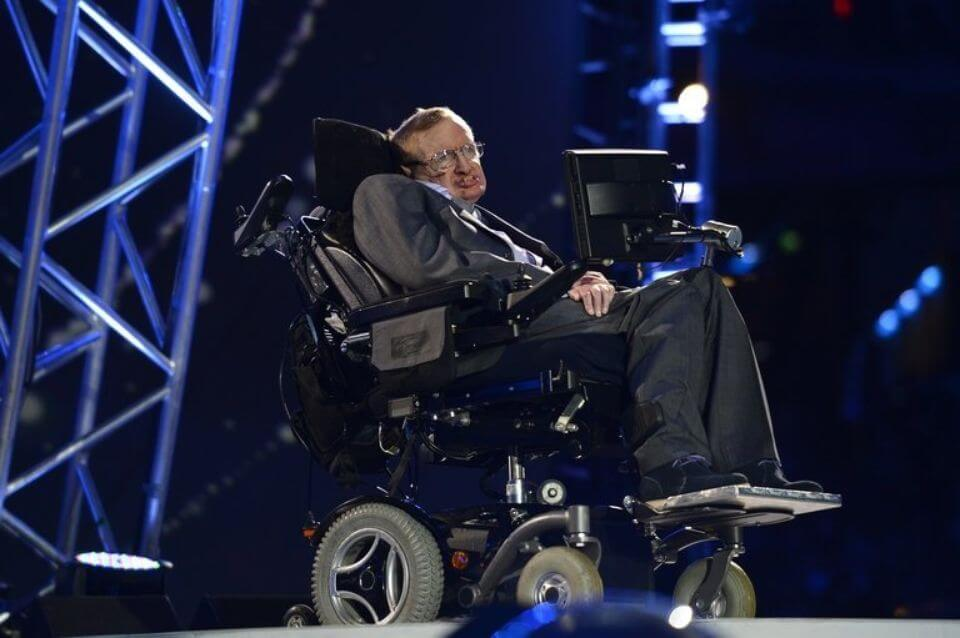
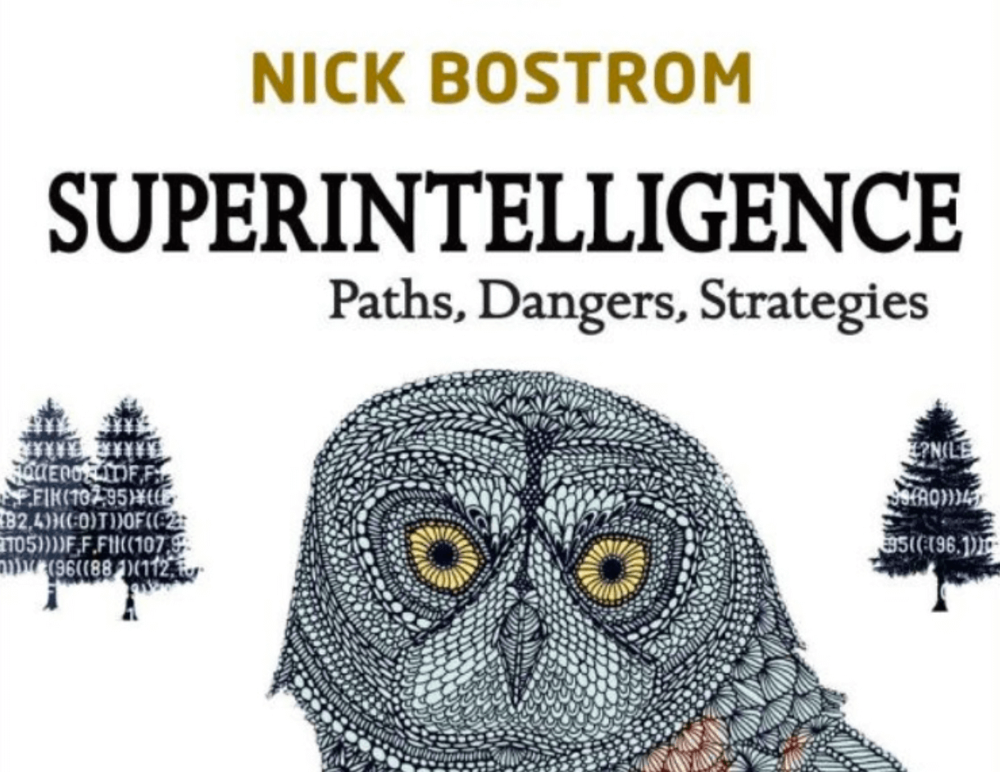

Home > Conclusion
In the future, robots will be more and more present and will help us to accomplish more and more tasks, but the risks will be increased too, hence the need for a legal framework that strictly defines the limits not to exceed.

Some scientists continue to view AI as a potential hazard. According to the mathematician and physicist Stephen Hawking "humans, limited by their slow biological evolution, would soon be replaced because it is impossible to compete against AI. ". In short, he announces the end of humanity.
This is also the case of Nick Bostrom, Swedish philosopher, who published in 2014 'Superintelligence'. According to him, the hypothesis of an AI capable of competing with human intelligence is still topical: "We do not know when artificial intelligence (AI) will be able to compete with human intelligence, but it will certainly happen in the twenty-first century »

Nick Bostrom's research presupposes that two conditions are met to witness the takeover of intelligence on earth by machines. The first would be the existence of many low cost computers carrying this superintelligence, so that the computer population exceeds the human population. The second, called recursive self-improvement, means that software can improve itself.
Other researchers consider that we are far from the existence of extremely intelligent machines and that humanity is not in danger, as Stéphan Clémençon, pilot of the Machine learning for Big Data chair at Télécom ParisTech:
br>
"For the moment, there are few truly autonomous systems and the only negative points of machine learning, the capabilities of single-machine machines, are the destruction of jobs that automation processes generate. Given the state of the art in machine learning, there are still major steps to take before creating algorithms that can adapt to their environment alone. "
According to Thierry Artières, researcher at the laboratory of fundamental computer science of the University of Aix-Marseille, we are far from the existence of extremely intelligent machines: "We know how to improve software performance in confined perimeters, such as the recognition of people in images or the search for information ". For the moment, there is no machine capable of "decompartmentalizing these perimeters".
The volume of data available to Google may seem worrying, but the researcher points out that "The advantage of Google, Facebook or Microsoft is not algorithmic but lies in the volume of data available: the more you have, the more you have reliable statistics that enhance the accuracy of your systems. "
So we are still far from being able to give birth to an artificial brain and for the moment humanity is not in danger. Even if a legal framework is essential and, as Seth Baum, executive director of Global catastrophic risk institute, says, "what is most important is that we take action now, to minimize the risk of a disaster afterwards ", in order to face the risks posed by the strong AI, there is no reason to be afraid of it.